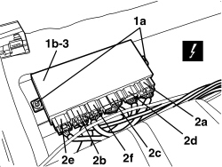

7030H50 AUTOMATIC HOOD ACTIVATING SYSTEM CONTROL UNIT - R.R. FOLLOWING SYSTEM CHECK
- Path
- Procedures > 70 FITTINGS > 7030 SUN ROOF/GLASS PANEL > 7030H AUTOMATICALLY OPERATED HOOD > 7030H50 AUTOMATIC HOOD ACTIVATING SYSTEM CONTROL UNIT - R.R. FOLLOWING SYSTEM CHECK
- Kind
- repair procedure (removal / refitting; the operation number is the code)
- Applies to
- engines: 2.2 JTS, 3.2 JTS; all production periods
- Interactive page
- https://sloeber94.github.io/elrnDB-aBrrSpdr/en/#/946004100
Applies to: engines: 2.2 JTS, 3.2 JTS; all production periods
 Removing
Removing
 Refitting
Refitting- Prepare the hood for the operation.
Op. 0010T79 HOOD HYDRAULIC SYSTEM - DISCHARGE AND RESTORE PRESSURE
Op. 7040C11 HOOD HOUSING COMPARTMENT FLOOR TRIM - R.R.
1. Undo the control unit (1b) fixing nuts (1a).
2. Disconnect the electrical connections (2a, 2b, 2c, 2d, 2e, 2f)).
Description | Component |
|---|---|
HOOD CONTROL UNIT |
3. Remove the hood operating system control unit.

Applies to: engines: 2.2 JTS, 3.2 JTS; all production periods
Refitting
Removing- Check that the hood operating system control unit is not damaged.
- Secure the electrical connections.
- Position the control unit.
- Tighten the nuts.
Op. 7040C11 HOOD HOUSING COMPARTMENT FLOOR TRIM - R.R.
- If discharged, restore the hood hydraulic system pressure.
Op. 7030H03 HOOD MANUAL OPENING FOLLOWING DEACTIVATION OF HYDRAULIC SYSTEM - CARRY OUT PROCEDURE
- Check that the hood is working properly using the Examiner.
- Close the hood using the electric control.
Topics linked from this page (4)
- 0010T79 HOOD HYDRAULIC SYSTEM - DISCHARGE AND RESTORE PRESSURE
- 7030H03 HOOD MANUAL OPENING FOLLOWING DEACTIVATION OF HYDRAULIC SYSTEM - CARRY OUT PROCEDURE
- 7040C11 HOOD HOUSING COMPARTMENT FLOOR TRIM - R.R.
- M187 HOOD CONTROL UNIT
Topics that link to this page (15)
- Q007 THE HOOD DOES NOT WORK
- 7030HC SOLENOID VALVES OPERATION CHECK
- 7030HD ELECTRIC PUMP OPERATION CHECK
- 7030HE CHECK ON OPERATION OF FLAP CONTROL MOTOR
- 7030HF CHECK ON POSITION SENSOR OPERATION
- E1050 CAN CONNECTION LINES - WIRING DIAGRAM
- E1050 CAN CONNECTION LINES - COMPONENT LOCATION
- E1050 CAN CONNECTION LINES - WIRING DIAGRAM
- E1050 CAN CONNECTION LINES - COMPONENT LOCATION
- E3096 HOOD OPENING - WIRING DIAGRAM
- E3096 HOOD OPENING - COMPONENT LOCATION
- E3510 RADIO - WIRING DIAGRAM
- E3510 RADIO - COMPONENT LOCATION
- E3510 RADIO - WIRING DIAGRAM
- E3510 RADIO - COMPONENT LOCATION